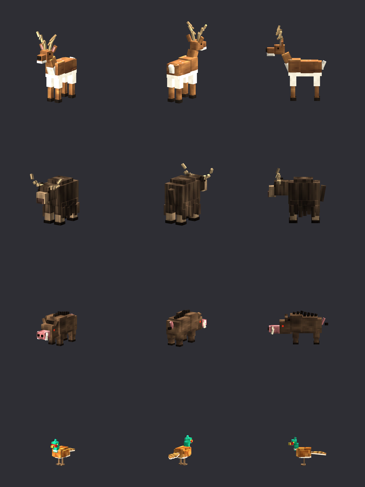
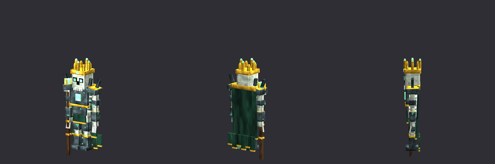
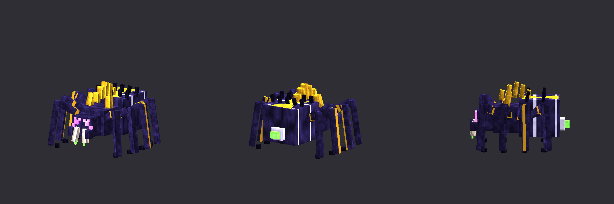

Survival++ Eclipsed Realms
A survival expansion for Minecraft Bedrock: new ores, stones, trees, crops, foods, animals, monsters and bosses - plus Java-style pearl stasis chambers and a claim-protection block that works on any server.
Download Read the guide ChangelogInstall in 30 seconds
- Download
SurvivalPlusPlus_EclipsedRealms_v1.2.0.mcaddonfrom the releases folder. - Open the file - Minecraft imports the Behavior Pack and the Resource Pack.
- Create a new world (or edit one and activate both packs). Requires Bedrock 1.26.50+, no experimental toggles.
- Explore new chunks - ores, stones, crops, animals and structures only generate in terrain created after the pack is on.
What's inside
3 ores & full gear
Azurite > diamond, Pyrelite > netherite, Eclipsite = 4x netherite. Only a Netherite-tier pickaxe mines them.
4 stones
Marlstone, Slate, Verdite, Umbrastone spawn right alongside normal stone, in caves and mountains.
5 trees
Jacaranda, Frostpine, Amberwood, Sunwood, Mireweep - complete wood sets in the right biomes.
5 crops & 13 foods
Real farming with wild patches to find, harvest-and-replant, bone meal, and dishes with buffs.
4 animals
Meadow Deer, Highland Yak, Wild Boar, Pheasant. Breed, hunt, cook.
4 monsters
Gravewalker, Revenant, Cave Weaver, Sporeling - smarter zombie, skeleton, spider and a fungus pest.
3 Overworld bosses
Hollow King, Mosswood Colossus, Silkqueen - condition-based summons, 3 phases, big loot.
5 structures
Graveyards, Verdant Shrines, Silk Nests, Hunter's Camps and Mossy Boulders.
Stasis chambers
Pearl stasis with a fishing rod, across any distance and dimension.
Sanctum Warden
Claim block with trusted players, passes and escalating responses. Endgame-hard recipe.
Preview



Renders from the generator's preview tool (not in-game screenshots).